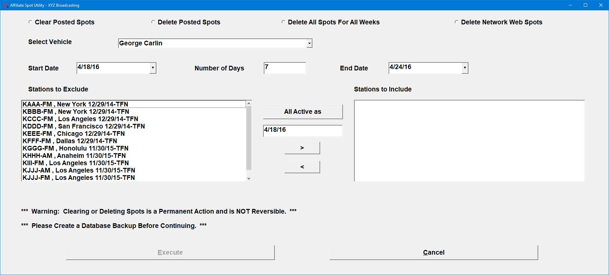

Unpost and or Delete Spot
The Affiliate System has built in Utilities that affect spots on the Counterpoint Affidavit System.
When to Run the Web Export Utility
These utilities are very powerful, cannot be reversed once performed, and should only be generated under the guidance of Counterpoint Service. For questions as to whether to run these utilities, please contact support@counterpoint.net.
Some common reasons why you would run these utilities include:
- When a station needs to repost previously posted spots on the Counterpoint Affidavit website, due to an error on their part
- If you are trying to end an agreement and receive a Message indicating that spots have been posted to the agreement after your desired end date
- If you need to re-export a revised log, and a station has already partially posted that week’s affidavit
Selecting Which Utility to Run
Each utility affects different areas of both the Affiliate and Counterpoint Affidavit systems. Below is a complete description of what each utility does and what needs to be done to recreate the spots. You can also hover over each utility and a brief help description will appear.
Select what Utility you wish to run:
- Clear Posted Spots: used to clear an erroneous posting done by an affiliate, this option resets the posting flags for Counterpoint Affidavit web spots, so that the affiliate can repost the affidavit on the web. It also removes the posted status flags from the affiliate system spots and resets the Post CP/Affiliate Affidavit record to outstanding. Once the posted spots have been cleared, the affiliate can repost the affidavit, then it can be reimported.
- Delete Posted Spots: used to resolve a problem with the affiliate spots, this option removes affiliate system spots, Counterpoint Affidavit web spots, and resets the Post CP/Affiliate Affidavit status to outstanding. After deleting the spots, if a change is required on the Traffic system to resolve a problem, after making the change, reprint the log and re-export to the web. If no Traffic change is required, re-export to the web so the affiliate can post the affidavit.
- Delete All Spots for All Weeks: will remove all spot information (posted and unposted) from the Counterpoint Affidavit System, and the actual spots from Post C.P./Affiliate Affidavits, as if the spots were never generated in the Affiliate system. This will remove all spots as it does not have date selectivity. You will need a password from support@counterpoint.net to perform this action, and must regenerate logs in the Traffic system and re-export logs to the Counterpoint Affidavit system to recreate spots.
- Delete Network Web Spots: will remove all spots from the Counterpoint Affidavit System within a requested date span, but will not remove spots from Post C.P./Affiliate Affidavits. You will need a password from support@counterpoint.net to perform this action, and must re-export logs to the Counterpoint Affidavit system to recreate spots for your affiliates.
Important note about Web Vendors and the Delete Spot utility: If web vendor services are used to automatically post spots, it is recommended not to delete web spots for affidavits that use web vendors after the spots have aired to help prevent the posting information from the web vendor from being lost. Instead, if changes need to be made to previously exported data that is now partially or fully in the past, make the changes on the Traffic system, then re-export the new data to the web. As an example, if the week in question starts on Monday 3/9, if today’s date is prior to 3/9, it is okay to use the utility to delete the web spots. But if today’s date is 3/9 (or 3/10 or any date after), it is recommended not to use the Delete utility but instead make Traffic changes and re-export. This will help prevent the posting information from the web vendor from being lost.
How to Run the Utility
To run any of these Utilities, from the File menu, select Utility, then select “Unpost and/or Delete Spot”.
Important Note: these actions are permanent and cannot be reversed.

Selectivity
First, pick the specific process you wish to run.
- Clear Posted Spots: Clears the posting flags for all affiliate spots, web spots, and the spots that appear in Affiliate Affidavits. (It does not remove any spots. This affects the posting flags only.)
- Delete Posted Spots: Removes all spots for the specified vehicle, station, and dates from the affiliate system and website, and clears the Affiliate Affidavit status. (Note: this affects both posted and unposted spots.)
- Delete All Spots for All Weeks: Removes all the spots for the specified vehicle and station from the Affiliate system, website, and from the Affiliate Affidavit screen. (A keycode is required from Counterpoint support to use this process.)
- Delete Network Web Spots: Removes web spots for the selected vehicle, station, and dates. (A keycode is required from Counterpoint support to use this process.)
Then select the remaining information as needed:
- Select Vehicle: Select the vehicle you wish to process from this dropdown.
- Start Date/Number of Days/End Date: Enter the start date and end date, and the number of days it will run for will be automatically calculated. If a start date and number of days is entered, then the end date will be automatically calculated. Note: these date fields only appear for the Clear Posted Spots, Delete Posted Spots, and Delete Network Web Spots processes. The “Delete All Spots for All Weeks” process has no date selectivity.
- Stations: A list of stations that are affiliated with the vehicle will appear in the left side “Stations to Exclude” box. Select the stations for which you wish to process by either holding the CTRL (Control) key while mouse clicking the individual stations, or by selecting the first station, scrolling down, holding the Shift key down, and clicking on the last station to select a block of stations. Once the stations are selected, click the Right arrow, and they will move into the “Stations to Include” box on the right side of the screen.
When all the required options are selected, click the Execute button and the utility will start to run. When you click Execute, each utility will ask a unique question that is used to confirm that you are running the correct utility for what you intend to do. Simply press OK on this warning message to run the utility.
- Clear Posted Spots Warning: “This option will reset spots as if they were sent to Network Web but not Posted (removing all Posted status flags from Affiliate Spots, Network Web Spots and Post CP status). Do you wish to continue?”
- Delete Posted Spots Warning: “This option will remove spots as if they were never generated on the Affiliate system (removing Affiliate Spots, Network Web Spots, and resetting Post CP status). Do you wish to continue?”
- Delete All Spots for All Weeks Warning: “This option will Remove all spots as if Traffic Logs were never generated (removing Affiliate Spots, Network Web Spots, and Post CP). Do you wish to continue?”
- Delete Network Web Spots Warning: “This option will remove Network Web spots as if they were never Exported (removing Network Web Spots). Do you wish to continue?”